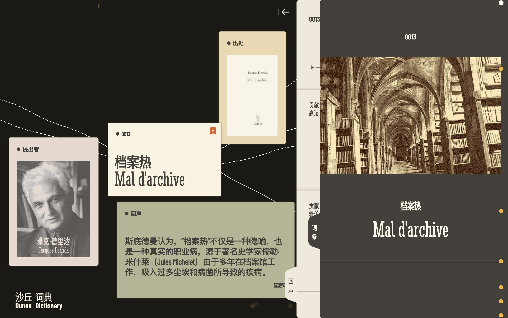

01–Launched websiteFull-stack development
Dunes Dictionary
An interactive dictionary and connected concept map. I contributed to the UI/UX and independently built the public website and admin tools for analytics and Excel-based content updates as part of a six-person team.